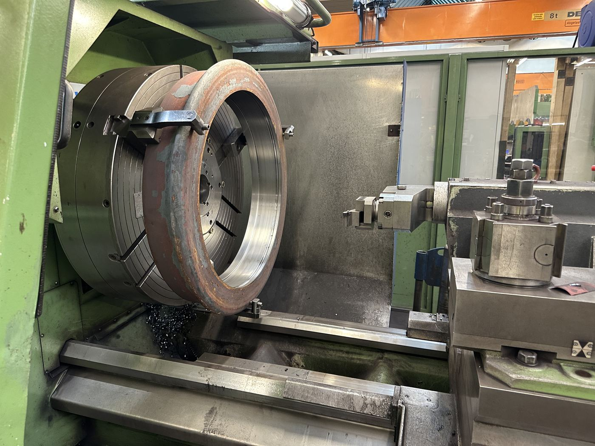
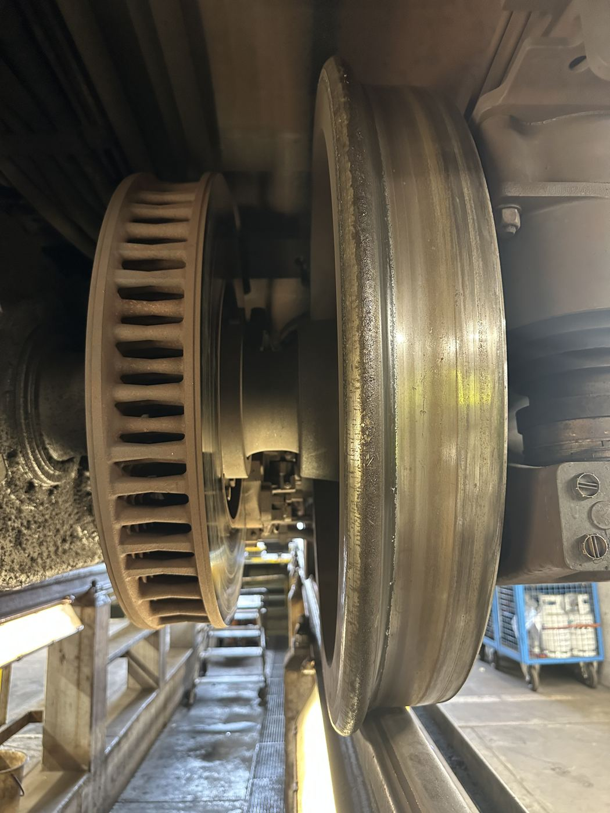

Radsatz auf einer Unterflur-Drehmaschine während der Reprofilierung.
Bauteil auf der Seite „Drehgestell“
Dreiteiliger Aufbau aus Felge, Gummifederung und Radreifen (Laufring). Da sich der Raddurchmesser durch Abrieb im Betrieb verringert, wird das Rad regelmäßig nachgeschliffen (Reprofilierung).
Die Gummifederung zwischen Felge und Laufring reduziert die Übertragung von Körperschall und Vibrationen auf den Wagenkasten – ein Beitrag zur Laufruhe, der in ähnlicher Form auch bei Straßenbahnrädern verwendet wird.
Beim Bremsen und durch den Rad-Schiene-Kontakt schleift sich das Laufprofil im Betrieb ab; ungleichmäßiger Verschleiß kann zu Unrundheiten führen, die als spürbare Vibration wahrnehmbar werden. Auf der Unterflur-Radsatzdrehmaschine wird das Profil ohne Ausbau des Radsatzes nachgedreht (Reprofilierung), bis Rundheit und Sollkontur wiederhergestellt sind.
Da alle Räder eines Radsatzes bzw. Drehgestells im gleichen Durchmesser laufen müssen, ist die Instandhaltung eng mit der Ersatzteil- und Terminplanung verzahnt – reprofilierte Radsätze reduzieren definierten Verschleiß, verkürzen aber die Lebensdauer bis zum vollständigen Austausch.
